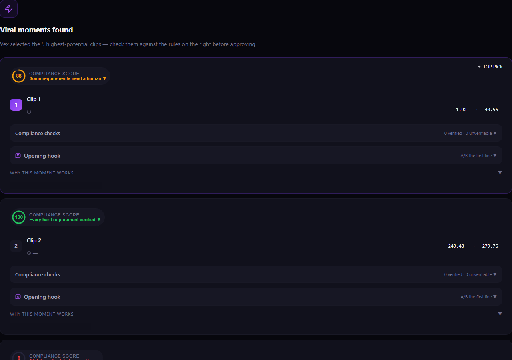
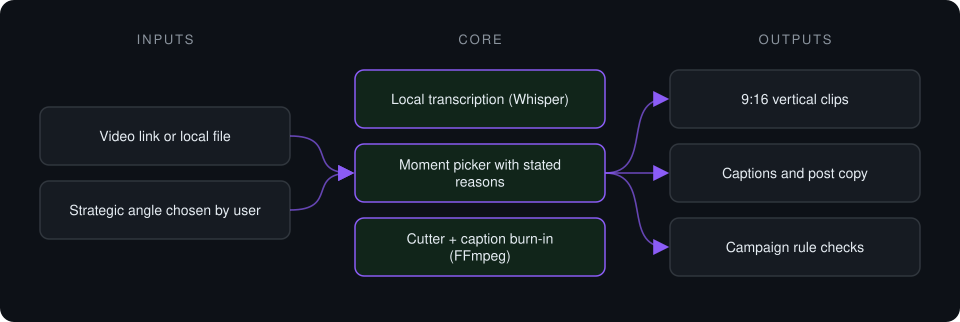
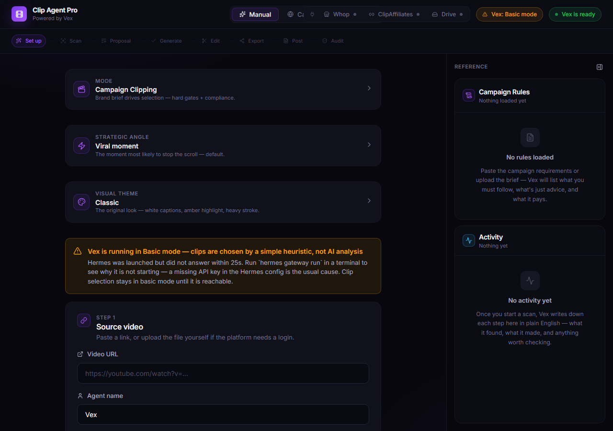
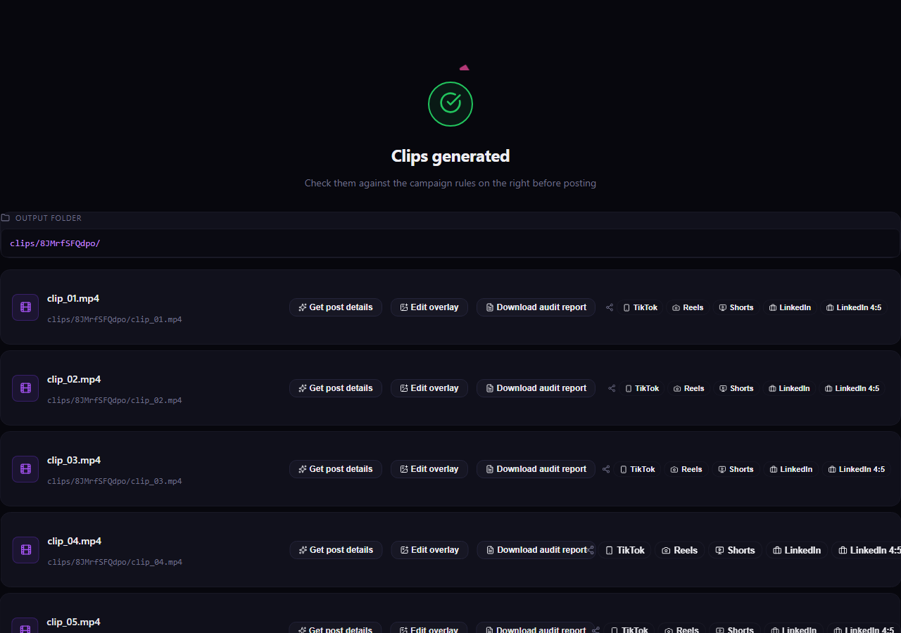

Case study · Private project
Clip Agent Pro
Desktop app that turns long videos into captioned vertical clips: transcribe, pick the moments worth cutting, cut, caption and export.
This is a proprietary project. Source code is private. This page showcases the system's architecture and results.

Problem it solves
Cutting short-form clips from podcasts, streams and interviews is slow manual work: scrubbing timelines, cutting, re-framing to 9:16, adding captions and writing copy. Clip Agent Pro does the whole chain in one local desktop app, and the user approves every proposed clip before a frame is encoded.
Architecture

- The user provides a link or file; media is downloaded and transcribed locally.
- The clip picker scores moments against the chosen angle and proposes ranges, each with a reason.
- The user approves or edits proposals in a mini editor.
- Approved ranges are cut, re-framed to 9:16 and captioned in a single pass, then exported per platform.
Key features
- Two engines: viral short-form picking and long-form dead-air removal
- Human approval step before any encoding
- Non-contiguous moments joined into one deliverable with crossfades
- Burned-in captions and generated post copy
- Campaign compliance check against platform rules
- Runs locally as a desktop app
Tech stack
- Tauri
- React
- Python
- FastAPI
- Whisper
- FFmpeg
What it does in practice
- Replaces a manual cut-caption-export loop with one guided flow inside a single app.
- Keeps media on the user's machine: transcription and rendering run locally.
Screenshots
Screenshots show the app running on seeded demo data, not client data.


